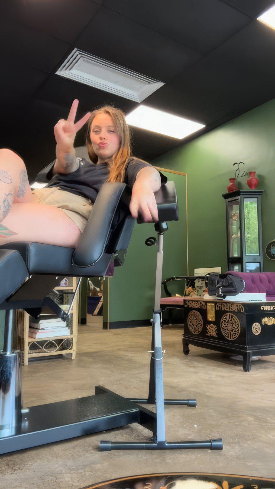

The room
Green walls, and a gallery that pays its artists in full.
Local artist call. A small gallery wall, open to local artists. Artists keep 100% of sales. No commissions, no fees. Just community.
The studio opened with Grillin’ & Chillin’, a grand opening and art show on Saturday, July 11, 2026. If you make art and want it on the wall, message the shop.
Ask about the wall